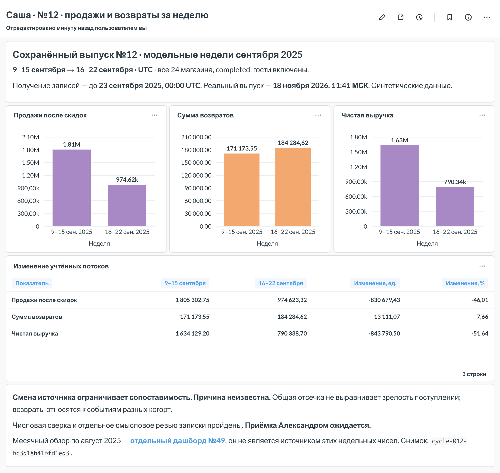

Саша сам готовит еженедельный отчёт по продажам
В учебной розничной сети Саша генерирует заказы и возвраты, обновляет таблицы, сравнивает недели и готовит записку руководителю.
Промежуточный отчёт
16–21 ноября 2026 против 9–14 ноября 2026. Обе недели — до субботы, 21:32 МСК.
Чистая выручка снизилась на 6,68%
Продажи после скидок −4,34%, сумма возвратов +21,06%. Снижение продаж и рост суммы возвратов вместе дали −48 787,23 условных денежных единиц. Причина изменений не установлена.
Записка составлена программно. Числа сверены по витринам и исходным событиям.
Статус проверок
Отдельная смысловая проверка моделью не выполнялась: дневной лимит исчерпан. Приёмка человеком ожидается.
Сверка промежуточного отчёта
| Показатель | 9–14 ноября | 16–21 ноября | Изменение, ед. | Изменение, % |
|---|---|---|---|---|
| Продажи после скидок | 797 943,80 | 763 291,11 | −34 652,69 | −4,34% |
| Сумма возвратов | 67 109,58 | 81 244,12 | +14 134,54 | +21,06% |
| Чистая выручка | 730 834,22 | 682 046,99 | −48 787,23 | −6,68% |
Учебные данные, 24 магазина. Продажи и возвраты — в условных денежных единицах. Чистая выручка равна продажам после скидок за вычетом суммы возвратов.
Каждое окно начинается в понедельник в 00:00 и заканчивается в субботу в 21:32 МСК. В расчёт входят события до конца окна и записи, полученные к собственной отсечке каждой недели. Возвраты могут относиться к более ранним продажам.
Числа независимо пересчитаны по витринам и по исходным событиям. Показатели в Metabase сверены с сохранённым расчётом.
Журнал выпусков
Отчёт №14 · выпуск от 20 ноября 2026
Отчёт №14
30 сентября – 6 октября против 23–29 сентября 2025 · UTC
Что изменилось
Продажи −1,15%, чистая выручка +3,97%. Сумма возвратов сократилась сильнее, чем продажи.
Куда посмотреть
Магазин №20 дал самый большой по модулю отрицательный вклад в изменение чистой выручки. Саша предлагает оставить магазин под наблюдением.
Сверка отчёта №14
| Показатель | 23–29 сентября | 30 сентября – 6 октября | Изменение |
|---|---|---|---|
| Продажи | 915 438,21 | 904 944,66 | −10 493,55 |
| Возвраты | 142 807,94 | 101 644,33 | −41 163,61 |
| Чистая выручка | 772 630,27 | 803 300,33 | +30 670,06 |
Учебные данные. Условные денежные единицы. Чистая выручка — продажи за вычетом возвратов.
Вклад магазина №20 — −22 467,77. Результат сохранился при сравнении данных на конец каждой недели. Следующий шаг — сверить наблюдение со следующими сопоставимыми данными.
История до сохранённого №12
Дата запуска и модельная отсечка — разные шкалы. Выпуск данных сам по себе не означает аналитическую находку.
Исходный срез; не ежедневный цикл.
№1–11 · старый режим · 8–18 ноября 2026
Продвигалась отсечка получения внутри заранее созданного мира. Новый пакет не генерировался; число вновь известных строк в квитанциях не записано. Технические отчёты и отдельный разбор пересмотра июня не приравниваются к недельной записке каждого выпуска.
Пересчитаны показатели июня 2025 по всей сети.
Срез данных обновлён; показатели завершённых месяцев и когорт не изменились.
Срез данных обновлён; показатели завершённых месяцев и когорт не изменились.
Срез данных обновлён; показатели завершённых месяцев и когорт не изменились.
В обзор добавлен завершённый июль 2025.
Срез данных обновлён; показатели завершённых месяцев и когорт не изменились.
Срез данных обновлён; показатели завершённых месяцев и когорт не изменились.
Срез данных обновлён; показатели завершённых месяцев и когорт не изменились.
В обзор добавлен завершённый август 2025.
Уточнены показатели августа 2025 по всей сети.
Срез данных обновлён; показатели завершённых месяцев и когорт не изменились.
Новый режим · пакеты генератора
Смена источника; установочный пакет B000001, 10 825 регистраций. Есть отдельный недельный разбор. Завершённые месячные и фиксированные когортные показатели без изменений; модельная отсечка продвинута.
№12 остаётся сохранённым выпуском даже при появлении следующих. Согласование аналитической записки человеком ожидается.
Данные журнала →Как устроен Саша
Сохранённый выпуск №12 · 18 ноября 2026 · данные 11:41, записка 13:14 МСК
Неделя в цифрах — и вывод агента
16–22 сентября 2025 против 9–15 сентября · UTC · отсечка получения 23 сентября, 00:00
Переход источника ограничивает сравнение. Полнота поздних поступлений не доказана; изменение показателей не устанавливает причину.
Metabase · сохранённый выпуск №12


Это снимок сохранённого рабочего дашборда Metabase для cycle-012-bc3d18b41bfd1ed3, не live-подключение. Месячный BI и недельный вопрос — разные представления.
Как устроен Саша
Синтетическая розничная сеть → данные → показатели → вывод агента → проверка.
DWH · хранилище данных
Какие поля связывают строки
customers.customer_id → orders.customer_id— профиль покупателя; у заказа customer_id может отсутствовать.store_timezones.store_id → orders.store_id— смещение местного времени магазина.orders.order_id → order_items.order_id— заказ и регистрации его позиций.products.sku → order_items.sku— товар позиции.returns (order_id, sku) → fct_order_items (order_id, sku)— возврат и обработанная позиция после снятия повторов.
У returns нет return_id; возвраты соединяются с обработанными позициями, не с дублями raw. Ограничения PK/FK в базе не объявлены. Логические связи по схеме выпуска №12. В raw допустимы повторы позиций; уникальность пары появляется после обработки. У гостевого заказа customer_id может отсутствовать.
Пришло дважды
| Регистрация* | Сумма |
|---|---|
| 18:58:01 | 40,04 |
| 18:59:01 | 40,04 |
Одна и та же позиция
Учтено один раз
stg_order_items → fct_order_items
1 × 40,04 − 0
Вошло в итог недели
6 174 уникальные позиции
16–22 сентября 2025 · UTC
* 16 сентября, местное время магазина №20 (UTC−7), доли секунды не показаны. SKU-APP-0275. Суммы в условных денежных единицах.
Витрины
Подготовленные продажи и возвраты с закреплёнными правилами расчёта.
fct_order_items · fct_returns
| Что хранится | Одна строка |
|---|---|
| Продажа | Позиция заказа: order_id + sku |
| Возврат | Событие возврата позиции |
Две ветки используют одну версию входов. BI: проверенная проекция → SQLite → Metabase. AI: отдельный снимок → недельный расчёт. Проверка доставки BI разрешает запуск AI; график не служит входом модели.
01 · Источник
За числом стоят события магазина
Заказ связывает покупателя и магазин. У заказа есть позиции товаров; возврат относится к конкретной позиции. Время события и время его получения хранятся отдельно.
Покупатель
customer_id
Регистрация и канал
Заказ
order_id
Магазин, статус, время
Позиция
order_id + sku
Количество, цена, скидка
Возврат → order_id + sku → позиция заказа. Один заказ может содержать несколько позиций.
Две доставки строки, одна продажа: 40,04
Магазин №20, товар SKU-APP-0275. Одна и та же позиция пришла дважды. После отбора первой регистрации в витрине остаётся одна строка: 1 × 40,04 − 0 = 40,04.
Это сохранённые синтетические строки выпуска. Показанный пример входит в полный реестр продаж недели; сам по себе он не подтверждает недельную сумму.
Исходные строки → обработка → вклад 40,04
Заказ S20261118-B000001-D1-S20-O0003, товар SKU-APP-0275, статус completed.
На вход: две регистрации
16 сентября, местное время магазина:
18:58:01.21212718:59:01.212127
Количество 1, цена 40,04, скидка 0 в обеих строках. Смещение магазина — UTC−7.
После обработки: одна позиция
Событие: 16 сентября, 18:53:53 → 17 сентября, 01:53:53 UTC.
Получение первой строки: 17 сентября, 01:58:01.212127 UTC. Повтор не увеличивает сумму.
| Слой | Что осталось | Результат |
|---|---|---|
stg_order_items | Первая допустимая регистрация | 1 позиция |
fct_order_items | qty × unit_price − discount | 40,04 |
| Недельный реестр | Продажа 16–22 сентября UTC | 40,04 из 974 623,32 |
Исходные и обработанные строки · JSON ↗ · SQL перевода времени ↗ · SQL отбора первой строки ↗ · SQL витрины продаж ↗
Почему возврат этой недели — не покупка этой недели
Заказ O00321203, товар SKU-TOY-0139: продажа — 27 августа, возврат — 17 сентября. После перевода времени возврат произошёл в 07:17:31 UTC, получен в 08:29:01 UTC.
Вклад за 16–22 сентября: продажи 0, возвраты 26,38, чистая выручка −26,38. Сумма возврата считается как количество возвращённых единиц × цена продажи; скидка повторно не вычитается.
Поэтому отношение возвратов и продаж недели не является вероятностью возврата её покупок. Причина late_delivery в этой синтетической строке не объясняет изменение всей недели.
Связанные строки продажи и возврата ↗ · Подготовка возвратов ↗ · Витрина возвратов ↗
Как событие становится продажей
Учитываются завершённые заказы (completed). Для одной позиции выбирается первая допустимая регистрация. Продажи после скидок: qty × unit_price − discount.
Окно — по времени продажи в UTC. В обеих неделях учитывается только то, что известно на общую отсечку 23 сентября 2025. Гостевой заказ определяется отсутствием customer_id; признак customers.is_guest не подменяет это правило.
Определения и границы недель · JSON ↗02 · Инженерный путь
Каждый шаг оставляет проверяемый результат
Раскройте шаг: слева — что он получает, справа — что оставляет следующему шагу.
Генерация событий
На вход
Сохранённое состояние синтетического мира и очередной модельный период.
На выход
Пакет B000001: 10 825 строк покупателей, заказов, позиций и возвратов. Даты получения позволяют учитывать запаздывающие события.
Загрузка в таблицы
На вход
Версионированный пакет событий.
На выход
Таблицы и журнал принятых пакетов. Повтор того же пакета не должен добавлять его строки второй раз.
Проверки и витрины
На выход
fct_order_items — позиции продаж; fct_returns — возвраты. Проверяются ключи, связи и допустимые значения.
Один расчёт — вход для показа и агента
На выход
Недельные агрегаты: продажи, возвраты, чистая выручка. Отдельная сверка по исходным строкам совпала с расчётом витрин.
Модель получает подготовленные данные и определения. Чтение картинки дашборда в этом процессе не заявляется.
SQL недельного расчёта
-- Event-time week, common receipt cutoff supplied by the pinned world_cursor/staging.
SELECT count(DISTINCT order_id) AS completed_orders,count(*) AS sale_lines,
coalesce(sum(qty),0) AS sold_units,coalesce(sum(revenue_gross),0) AS sales_amount
FROM main.fct_order_items WHERE status='completed' AND ordered_at_utc>=? AND ordered_at_utc<?;
SELECT count(*) AS return_events,coalesce(sum(qty_returned),0) AS returned_units,
coalesce(sum(returned_value),0) AS returns_amount
FROM main.fct_returns r JOIN main.stg_orders o USING(order_id)
WHERE o.status='completed' AND r.returned_at_utc>=? AND r.returned_at_utc<?;
Открыть SQL ↗03 · Сохранённые показатели
Что изменилось между двумя неделями
Все магазины сети, завершённые продажи, единая отсечка получения данных. Денежные значения — условные.
| Показатель | 9–15 сентября | 16–22 сентября | Изменение |
|---|---|---|---|
| Продажи после скидок | 1 805 302,75 | 974 623,32 | -46,01% |
| Сумма возвратов | 171 173,55 | 184 284,62 | 7,66% |
| Чистая выручка | 1 634 129,20 | 790 338,70 | -51,64% |
Недели лежат по разные стороны перехода источника. Полнота поздних поступлений не доказана. Причину изменения продаж этот расчёт не устанавливает.
Откуда взялось 974 623,32
Сумма продаж после скидок по 6 174 строкам витрины, относящимся к 2 812 заказам. Время продажи: с 16 сентября включительно до 23 сентября исключительно.
Σ(qty × unit_price − discount) = 974 623,32
Независимый путь по исходным строкам использует фильтр времени получения, дедупликацию и Decimal-арифметику. Он дал тот же итог.
Посмотреть исходную позицию и правило расчёта →
Скачать полный реестр · CSV · CSV.GZ · Проверка суммы и SHA-256 ↗
В реестре 6 174 уникальные пары order_id + sku. Сумма revenue_gross с точной десятичной арифметикой — 974 623,32. Позиция на 40,04 входит в реестр один раз. Два примера показывают правила; полный итог подтверждается всеми строками.
Результат сверки по исходным строкам ↗ · Все показатели и определения ↗Недельная таблица собрана из сохранённого входа анализа этого выпуска. Месячный график Metabase агрегирует другой период; его нельзя выдавать за эту недельную таблицу.
Дальше: что агент сделал с этими данными →04 · Аналитическая работа
От вопроса к проверенной записке
Что изменилось в продажах и возвратах последней полной модельной недели относительно предыдущей?
В этом вопросе «полная» означает закрытое окно событий. Полнота поздних поступлений не подтверждена.
Первая записка агента
Александр, в учтённых данных продажи после скидок составили 974 623,32 против 1 805 302,75 условных денежных единиц; изменение −46,01%. Снизились также число заказов, строки продаж и проданные единицы.
Исходная выдача сохранена до проверки. Ниже — её текст с подстановкой проверенных значений из фактов; полный структурированный ответ доступен отдельно.
Прочитать текст записки
Александр, в учтённых данных продажи после скидок составили 974 623,32 против 1 805 302,75 условных денежных единиц; изменение −46,01%. Снизились также число заказов, строки продаж и проданные единицы.
Событий возврата стало меньше: изменение −0,96%, но возвращённых единиц больше: 1,31%. Сумма возвратов выросла до 184 284,62 с 171 173,55, изменение 7,66%. Чистая выручка составила 790 338,70 против 1 634 129,20, изменение −51,64%: арифметически сказались и снижение продаж, и рост суммы возвратов.
Причины неизвестны. Сравнение пересекает переход источника, а общий срез получения не выравнивает зрелость received_at. Полнота поступления не доказана; поздние записи могут изменить итоги. Возвраты относятся к потоку событий, а не к вероятности возврата покупок этой недели. Данные синтетические, реальный бизнес-эффект не установлен; смена источника не доказывает бизнес-причину.
Предлагаю принять описательную базу и методику, дождаться сопоставимых наблюдений в едином режиме с проверкой зрелости поступления и пока не предпринимать торговых мер по этому сравнению. Согласуете?
Текст записки перенесён дословно. В показе основания открываются по локальным копиям: паспорт выпуска, определения и вход, SQL расчёта. Исходный файл записки с путями рабочего проекта сохранён отдельно без изменений.
Исходный структурированный ответ агента · JSON ↗Приёмка
Решение Александра ожидается. Проверки его не заменяют.
Что проверил рецензент; были ли исправления
«Блокирующих проблем не выявлено. Смысловое ревью пройдено; это не приёмка Александром.»
- В записке верно указаны оба полуоткрытых недельных интервала UTC и общая отсечка получения 2025-09-23T00:00:00Z.
- Указаны все 24 магазина, все каналы и гости, статус completed и условные денежные единицы; числовая проверка пройдена.
- Окна событий отделены от среза получения по received_at; возвраты описаны по времени возврата.
- Раскрыты переход между источниками на границе недель, неполный перенос неизвестных прежних продаж и ограниченная сопоставимость.
- Изменения описаны как наблюдаемые; разложение снижения чистой выручки явно арифметическое, причины не установлены.
- Различия генерации и смена источника не объявлены доказанной бизнес-причиной.
- Поток возвратов явно отделён от когортной вероятности; отмечена связь с продажами других недель.
- Учтена неодинаковая зрелость недель: общий received_at-срез не делает последнюю закрытую неделю полной, поздние записи могут пересмотреть итоги.
- Предложено продолжить наблюдение в сопоставимом режиме без торговых мер; согласование Александра запрошено, но не заявлено полученным.
- Данные прямо названы учебными и синтетическими; реальный бизнес-эффект не установлен.
В сохранённой рецензии список замечаний пуст. Исправленная моделью версия в этом выпуске не представлена; первая выдача сохранена. Рецензент работал в отдельном контексте с тем же классом модели — это не независимость провайдеров.
Упоминание неназначенной смысловой проверки в исходном ответе относится к моменту его создания, до рецензии.
Журнал технических исправлений ↗: исправления обработки ответа и упаковки отделены от содержания записки. Нового модельного ответа из-за них не создавали.
Действие человеку — запрос агента
Александр, предлагаю принять расчёт как описательную базу и методику наблюдения, дождаться сопоставимых наблюдений в едином режиме источника с проверенной зрелостью поступления и пока не принимать торговых мер на основании этого сравнения. Согласуете такой подход?
Согласование ещё не получено. Причины изменений не установлены.
Что передано модели
Вопрос, агрегаты двух недель, определения метрик, версия выпуска и ограничения сравнения. Вход не содержит будущих событий и скрытых причин генератора.
Сохранённый набор фактов ↗ · Точное задание модели · TXT ↗Поле path в исходном задании — адрес в рабочем проекте, а не веб-ссылка. Доступные копии для этого показа: выпуск, правила и факты, расчёт.
05 · Эксплуатация
Один запуск — ещё не регулярная работа
Обновление данных и BI проверено. Для этого выпуска выполнены первый модельный анализ и отдельное ревью. Повторный аналитический запуск по расписанию ещё предстоит наблюдать.
- 18 ноября 2026, 11:41 МСК
- Сформирован установочный выпуск №12. Пакет B000001: 10 825 строк.
- Автоматическая доставка
- Технически проверенный выпуск подхвачен службой BI и доставлен в Metabase.
- Недельный анализ
- Установочный анализ завершён 18 ноября, 13:14 МСК. Первая выдача сохранена; числовая проверка и отдельное модельное ревью пройдены. Приёмка ожидается.
- Следующий регулярный запуск
- Не наблюдался в сохранённом пакете. Установка расписания не заменяет это наблюдение.
Автоматика
Новые события, загрузка, расчёт, технические проверки и доставка BI.
Человек
Определяет вопрос и правила учёта, принимает вывод, решает, как его использовать. Неустановленная причина остаётся вопросом.
Версия и границы этого показа
cycle-012-bc3d18b41bfd1ed3
Квитанция установочного анализа ↗ · Паспорт и время двух модельных вызовов ↗
Демонстрация принята автором 18 ноября 2026. Это не подтверждает причины изменения показателей или регулярную автономность.
Это сохранённый выпуск с датой. Страница не подключена к рабочему серверу и не обновляет показатели в реальном времени. Экран владельца в Metabase доступен отдельно и требует входа.
Данные синтетические. Эффект в реальном бизнесе и повторный модельный запуск по расписанию пока не подтверждены.
Проект для преподавания
Что здесь можно разобрать вместе
На занятии участник проследит одну метрику от исходных строк до вывода агента и проверит, можно ли этот вывод принять.
Что спроектировано и проверено
Синтетический источник событий, загрузка с защитой от повторов, правила расчёта, витрины и доставка в BI. Для недельного анализа закреплены входы; сохранены первая выдача агента, независимая числовая сверка и отдельная модельная рецензия.
Это авторский инженерный проект, выполненный с помощью агентов. Отдельное модельное ревью и человеческая приёмка различаются.
Темы занятия
- Сущности, связи и зерно таблицы.
- Поздние события, отсечка и воспроизводимый срез.
- Одна метрика: исходная строка → SQL → показатель.
- Что передать агенту и как проверить его вывод.
Реестр продаж · CSVПримеры обработки ↗SQL расчёта ↗Числовая сверка ↗Данные для анализа ↗Где я преподаю →